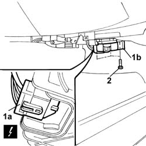

5040C30 AIR CONDITIONING FAN - R.R.
- Path
- Procedures > 50 auxiliary units > 5040 AIR CONDITIONING CASING AND COMPONENTS > 5040C AIR CONDITIONING CASING AND COMPONENTS > 5040C30 AIR CONDITIONING FAN - R.R.
- Kind
- repair procedure (removal / refitting; the operation number is the code)
- Applies to
- all engines; all production periods
- Interactive page
- https://sloeber94.github.io/elrnDB-lThss/en/#/79211
Applies to: all engines; all production periods
 Removing
Removing
 Refitting
Refitting- Open the boot and disconnect the negative battery terminal.
See in Op. 7040A60 UNDER FACIA TRIM - R.R.
1. Disconnect the electrical connection (1a) for the fan (1b).
 | Description | Connector |
|---|---|---|
1a | Passenger compartment air fan | N085 |
2. Undo the fan fixing bolts.

Applies to: all engines; all production periods
- Remove the fan.
Applies to: all engines; all production periods
Refitting
Removing- Fit the fan tightening the fixing bolts.
- Connect the electrical connection for the fan.
| Description | Connector |
|---|---|---|
. | Passenger compartment air fan | N085 |
See in Op. 7040A60 UNDER FACIA TRIM - R.R.
- Connect the negative battery terminal.